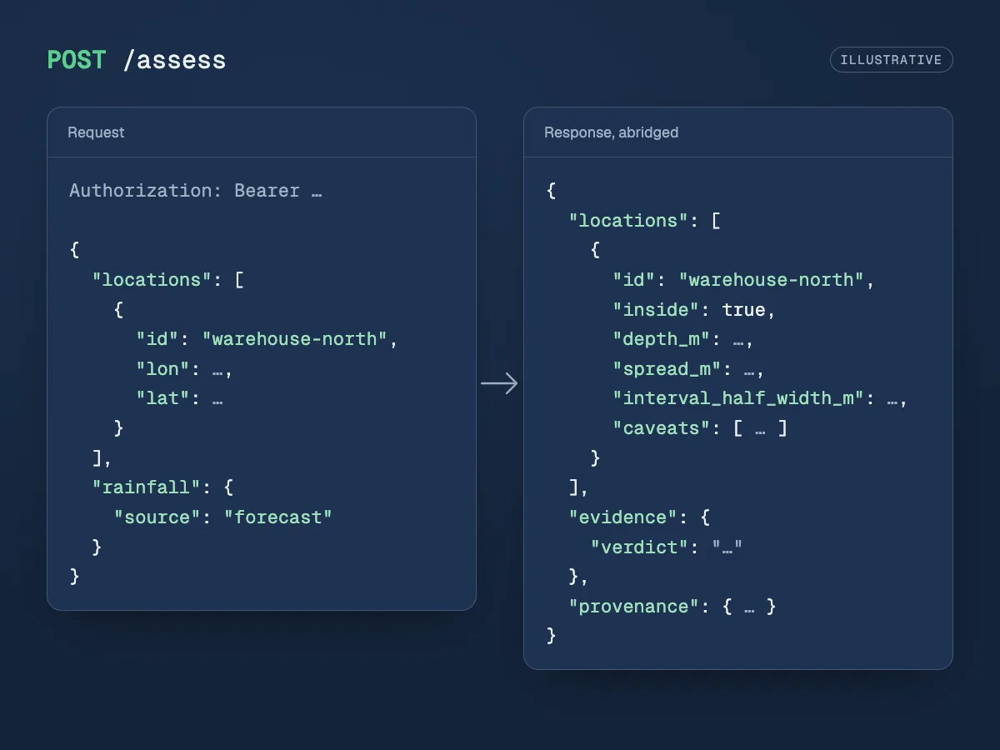

Status
Private previewIn private preview. Book a demo to see it for your sites.
Product
Private previewSend coordinates and get back a depth in metres for each location, with its uncertainty band and caveats.

Illustration. A replay listing from the platform API, drawn as an image.
In private preview. Book a demo to see it for your sites.
transferred or uncalibrated, and the band is only as good as that word.Specification
POST /assess, JSON over HTTPS, with your API key as a bearer token.site_id (an area we serve), locations (your assets, each with your own id, lon and lat) or point (screen the ground around one place).forecast (the coming days' rain forecast) or scenario (a multiple of a reference storm, its length and where its peak falls).depth_m in metres, spread_m, interval_half_width_m, inside, and caveats with stable codes. A missing depth is null, never 0.verdict: calibrated, transferred or uncalibrated, with the nearest calibrated area.window_m, the side of the terrain modelled around your locations. The server sets a default: too small a window leaves out ground that drains to you, and under-predicts.POST /assessments keeps each request as a job you can fetch again.How it works
Step 1
Your locations and a rainfall: the forecast, or a scenario.
Step 2
We take Environment Agency 1 m LiDAR around your locations, and the rainfall you asked for.
Step 3
TERRA's depth at each location, with its band, caveats, evidence and provenance.
Data inputs
You
The places you want answers for: your own identifiers, with longitude and latitude.
Ground
Environment Agency LiDAR on a 1 m grid: the bare-earth ground the water runs over.
The storm
Forecast rain for the coming days over each area, from Open-Meteo.
The storm
A multiple of a storm that happened, with its length and where its peak falls.
The model
Our machine-learning model, trained on those runs. From a storm's rainfall it gives water depth in metres, with an uncertainty band.
Example
Illustrative only. The field names are the platform's own; the values are placeholders, shown as …, and the response is abridged.
POST /assess
Authorization: Bearer fk_…
Content-Type: application/json
{
"locations": [
{ "id": "warehouse-north", "lon": …, "lat": … },
{ "id": "substation-7", "lon": …, "lat": … }
],
"rainfall": { "source": "forecast" }
}{
"locations": [
{
"id": "warehouse-north",
"inside": true,
"depth_m": …,
"spread_m": …,
"interval_half_width_m": …,
"caveats": []
},
…
],
"rainfall": { "source": "forecast", "total_mm": …, "timing": { … } },
"evidence": { "verdict": "transferred", "nearest_site_id": …, … },
"caveats": [
{ "code": "forecast_uncertainty_not_modelled",
"severity": "warning", "message": … }
],
"provenance": { "emulator_version": …, … },
"inference_seconds": …
}Branch on a caveat's code, not its message. Portfolio screening, a whole area rather than points, is in development, and so is an MCP server for AI assistants.
Giving confidence to act before flood becomes disaster.
Book a 20-minute demo to see flood depth maps for areas we serve, and to ask about yours.